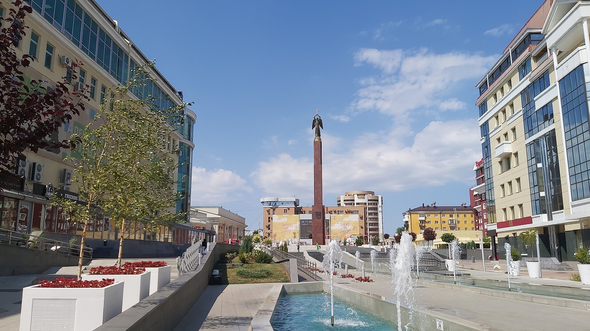

История Ставрополя
Ставрополь был основан в 1777 году как крепость Азово-Моздокской оборонительной линии.
«Ставрополь — один из городов Северного Кавказа».
Ставрополь был основан в 1777 году как крепость Азово-Моздокской оборонительной линии.
«Ставрополь — один из городов Северного Кавказа».
